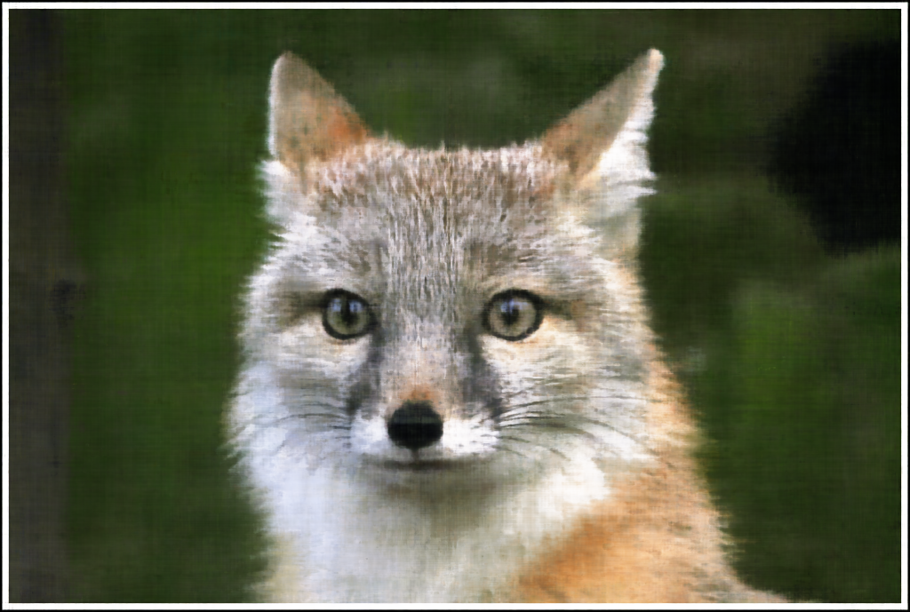
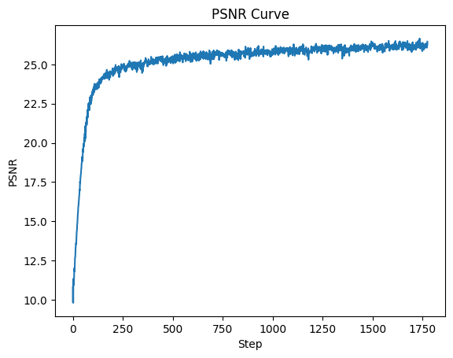

Before working in 3D, we start with a 2D example: a Neural Field from 2D pixel coordinates (u,v) to 3D pixel
colors (r,g,b). This involves a couple of steps:
Network: creating a multilayer perceptron (MLP) with sinusoidal positional encodings
MLP architecture: 3 hidden linear layers of size 256 with ReLU, 1 linear output layer of size 3
with sigmoid
PE: series of sinusoidal functions with highest frequency L=10, mapping 2D coordinates to 42D
vectors
Dataloader: implementing a dataloader that randomly samples and processes N pixels per training
iteration
Loss Function, Optimizer and Metric: defining metrics and hyperparameters
25 epochs, batch size 1000, Adam optimizer with learning rate 1e-2
Loss function: Peak signal-to-noise ratio (PSNR) computed from MSE
Hyperparameter Tuning
The following sequence visualizes the training process by plotting the predicted images across iterations.

Fox: PSNR Curve 1
An example from the hyperparameter tuning process was varying L from 10 to 15 and varying channel size from
256 to 128. This edit didn't affect the performance of the network much, as the increase in L seemed to
compensate for the decrease in channel size.

Fox: PSNR Curve 2
This optimization was also performed for another image. Specifically, the learning rate was increased to
2e-2 because it didn't seem to have converged.
Cat: PSNR Curve 1
This time, I tried the opposite for hyperparameter tuning: decreasing L from 10 to 5 and increasing channel
size from 256 to 400. As seen in the predicted outputs, this change seems to create smoother images that
capture fewer positional differences.
Cat: PSNR Curve 2
Part 2: Fit a Neural Radiance Field from Multi-view Images
Part 2.1: Create Rays From Cameras
To begin, we define a few functions to transform among image, camera and world coordinates:
Camera to World Coordinate Conversion: the transform(c2w, x_c) function
multiplies camera coordinates by a camera-to-world transformation, or extrinsic, matrix, which
contains a rotation matrix and translation vector, in order to obtain the corresponding world
coordinates.
Pixel to Camera Coordinate Conversion: the pixel_to_camera(c2w, x_c) function
transforms pixel coordinates into the camera coordinate system, using the pinhole camera's
intrinsic matrix K defined by its focal length and principal point.
Pixel to Ray: the ray_o, ray_d = pixel_to_ray(K, c2w, uv) function utilizes the
previous functions to convert pixel coordinates to world coordinates, then create rays with an
origin and normalized direction.
Part 2.2: Sampling
Sampling Rays from Images: the sample_rays(N, M) function randomly samples M
images, then N rays from each image.
Sampling Points along Rays: the sample_along_rays(rays_o, rays_d, perturb) then
samples points along these rays, which can be perturbed to help prevent ovefitting in the training
process.
Part 2.3: Putting the Dataloading All Together
The above steps are then integrated into the dataloading process, which randomly samples
pixels from a dataset of images, and is visualized below:
Plot Cameras, 100 Rays and Samples in 3D
Part 2.4: Neural Radiance Field
Now, the Neural Radiance Field can be learned with a network that takes in 3D world
coordinates x and 3D ray direction vector r_d, then outputs predicted 3D rgb colors and a 1D density.
This network is a deeper, more powerful MLP.
NeRF3D Model Architecture
Part 2.5: Volume Rendering
To generate rendered colors, the volume rendering equation aggregates the batch of samples
along each ray.
Volume Rendering Equation
The training process is visualized below, along with the PSNR curve every step (10
iterations) on the validation set.
Lego Scene: Validation PSNR Curve
Finally, the network can be used to render a novel view of the scene from an arbitrary camera extrinsic: